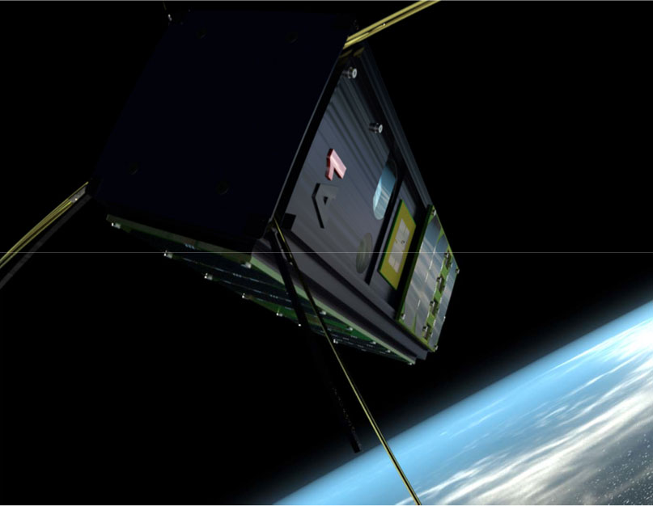
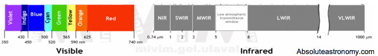
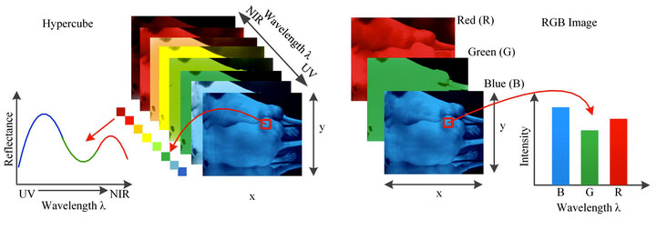
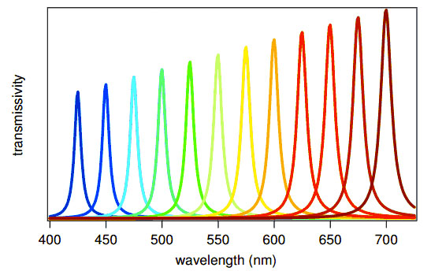
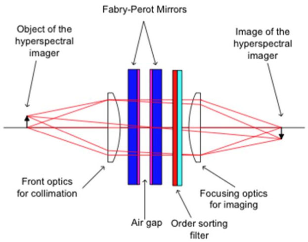
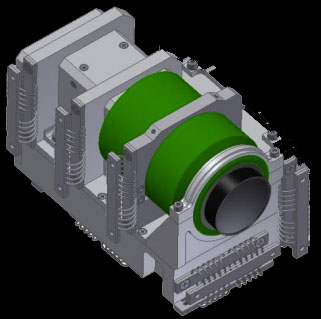

ZenSat-1: More than your eye can see

Artist's Impression of ZenSat-1 in Low Earth Orbit
nuTerra's ZenSat-1 (MNM Sat-1) is a Next Geneneration Nano Satellite equipped with a hyperspectral camera
and onboard processing capabilities for monitoring our planet.
Built in a 3U Cubesat formfactor and in an approximate orbit of 600km with 90minute period.
We apply agile thinking to aerospace technology, and can custom-fit data aquisition to the need of your business.
By using COTS (Commercial Off The Shelves) component, and the 3U Cubesat form factor, we're able to keep costs down, and increase volumes leveraging the exponential improvements in camera sensor technology we're able to customise data aquisition for your need.
| |
VIS1 |
NIR |
| Description |
Hyperspectral in VIS+NIR by use of dynamic tunable filter |
Hyperspectral in SWIR |
| Optics |
900mm Maksutov Cassegrain |
N/A |
| Sensor |
Kodak 29MP W-RGB 35mm |
PolarFour(TM) |
| GSD |
6m |
100m |
| Spectral Band |
500nm-900nm |
900-1500 |
| Spectral Resolution |
5-15nm |
N/A |
| Spectral Bands |
10-100 configurable "on the fly" |
20 |
What is hyperspectral?
Hyperspectral cameras


A new breed of Low-Cost Hyperspectral Sensors
Traditional Hyperspectral Imaging Systems (HSIS) are expensive, and requires a lot of computing power.
By eqipping existing COTS (Commercial Off the Shelves) sensors & optics with Dynamically Tunable filters we are able to bracket over a defined set of frequences, which can be configured depending on the use case.
By using an adaptive filter to control exactly which wavelengths of light that is allowed through to hit the sensor, we can use Panchromatic sensors with high resolution, and thus increase Ground Sample Distance (GSD). Using a Fabry-Perot filters allows higher throughput of light than traditional LCD Tunable filters.
|
 |
Traditionally Hyperspectral imaging has been done using push-broom technologies and Fourier Transforms
he difference from a traditional hyperspectral imaging system is that we retain high spatial resolution, and avoid the need of Reverse Fourier Transformation, thus relaxing the need for processing power. Another advantage is that the spectral bands can be configured on the fly, to avoid over use of data. |
 |
Near IR for use in Agriculture
|  |
Going beyond the visible spectra enables interesting use cases in agriculture, and other fields. |
| |
|
|
|